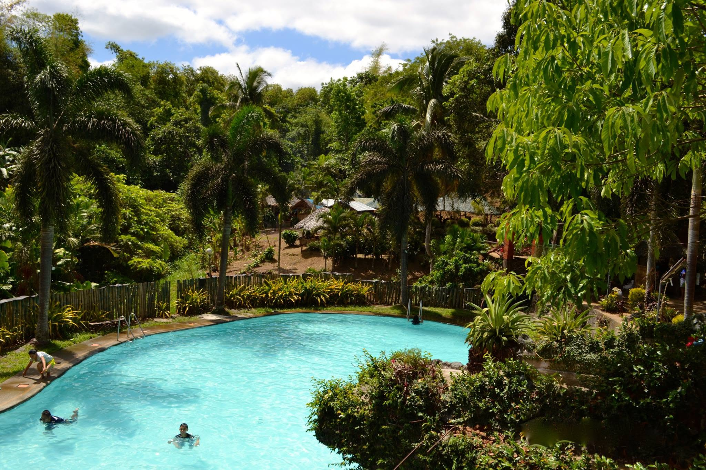

At the lowest water, the shoreline becomes a different kind of map. The paths are temporary, the pools are little worlds, and the walk asks you to slow down.
We leave the house just after breakfast, while the rocks are still dark with the retreating sea. Freya knows the tide by the small signs: a band of foam left on the kelp, the channel that has just stopped running, the gulls gathering where the water is shallowest.
Look closely, then look again
In the first pool, a beadlet anemone folds its bright tentacles away from the air. A little farther on, limpets hold fast to the stone and tiny crabs slip beneath a fringe of bladderwrack. Nothing announces itself. You have to give your eyes a moment to adjust to the scale of it all.
We keep to the marked route and leave each pool as we found it. The tide will return soon enough, carrying the little worlds back into the larger one. By the time we climb the path, the beach has already changed shape.
A walk without a finish line
There is no distance to cover and no list to complete. We stop when someone notices something, and turn back when the water says it is time. That is the whole plan.
Guided low-tide walks leave from the cove path each morning, weather permitting. Ask at the front desk the evening before and we will let you know when the water is right.